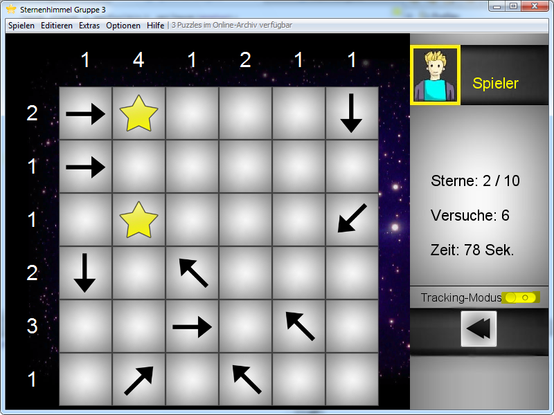
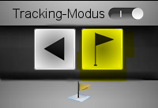
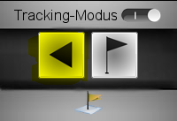

Der Tracking-Modus wird mit dem Button, der sich rechts vom Spielfeld befindet ein- oder ausgeschaltet.

Ist der Tracking-Modus aktiv, kann jederzeit ein Trackingpunkt gesetzt werden.

Die Anzahl der gesetzten Trackingpunkte wird durch Fähnchen angezeigt.
Zu den gesetzten Trackingpunkten kann mit der Schaltfläche "Zurück zum letzten Trackingpunkt" nacheinander wieder zurückgesprungen werden.

Hierbei wird jedes zurückgesetzte Feld als weiterer Lösungsschritt gezählt.
Die Funktion "Zurück zum Fehler" wird durch Aktivierung des Tracking-Modus ausgeblendet. Jederzeit kann zur anderen Option gewechselt werden.
Created with the Personal Edition of HelpNDoc: Free EBook and documentation generator